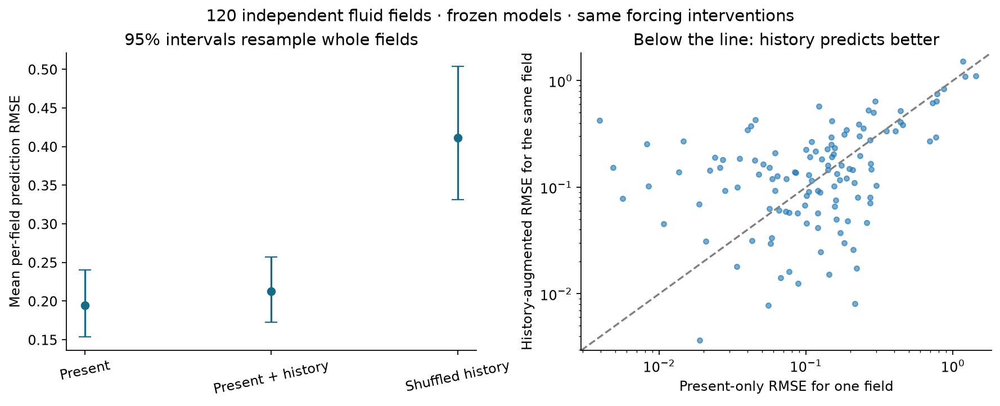
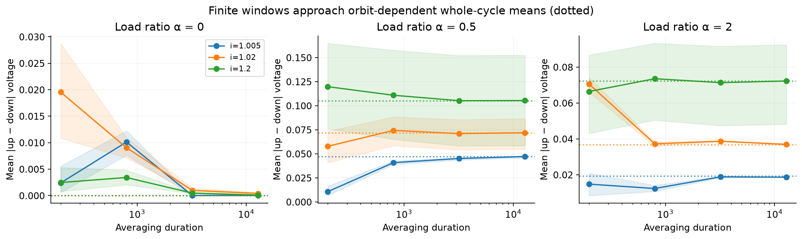
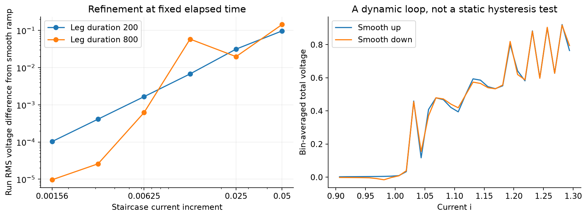
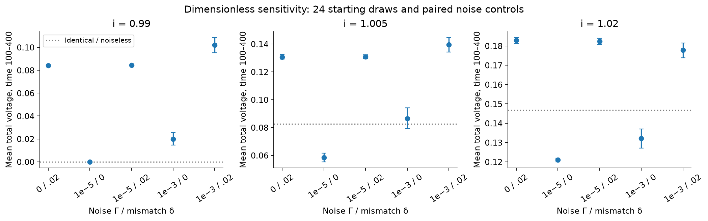
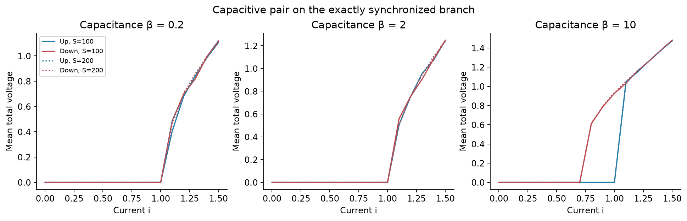
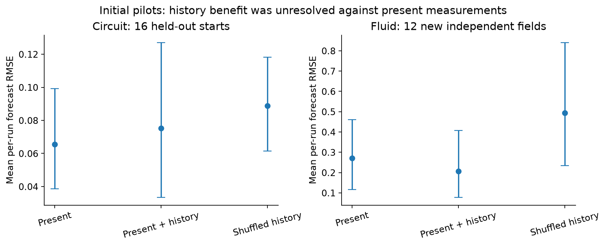

Josephson follow-ups — Streams and Rocks
What was actually completed
These are dimensionless simulations, not measurements of a fabricated circuit. The fluid study is a separate Navier–Stokes forecast replication.
| Study | Completed numerical work |
|---|
| Longer observation / whole cycles | 324 checkpoint cases, two cycles each; windows 200, 800, 3,200 and 12,800 via verified periodic continuation; six direct integrations to 12,800. Checkpoints reuse the prior 12 phase-pair draws. |
| Sweep protocols | 12 new initial phase pairs, two ramp speeds, six staircase increments, and smooth ramps with a half-step control. Three finer increments were added after the original error was nonmonotone. |
| Noise / mismatch | 360 condition-trajectories at each of two coupled time steps; 24 starting draws, three currents, five noise/mismatch combinations, plus 72 matched identical/noiseless controls. |
| Capacitance | Three capacitances, six equal-phase starts, up/down currents 0–1.5 at spacing 0.1, three numerical/settling variants: 1,728 plateaus. Exactly synchronized branch only. |
| Circuit forecasts | 24 training, eight validation and 16 independent test phase pairs; three observation times and two interventions per run. |
| Fluid forecasts | Old 18/6 training/validation fields; 12 newly simulated test fields, each cloned into three forcing arms. Two new fields also checked at half the time step and a finer grid. |
Repeated windows, current values, arms and numerical refinements are paired measurements, not extra independent samples. The report retains the original sweep’s numerical failures in its separate earlier record.
LARGER INDEPENDENT TEST · COMPLETED AFTER THE 12-FIELD PILOT
This larger test did not resolve a history advantage over present measurements.
120 entirely new fluid starting fields (seeds 5000–5119), each cloned into unchanged, abrupt-shutoff and gradual-shutoff forcing: 360 response trajectories. Eight additional three-arm numerical controls use half the time step and a finer grid on four declared seeds. The physical parameters are the same smooth periodic-flow regime as the pilot.
The present-only, history and shuffled-history models were frozen before generating the new fields; their exact file hashes and the protocol were recorded. There was no refitting, re-selection, feature change or removal of poorly predicted runs. The original 18 training and six validation fields are unchanged; the old 12-field pilot is excluded from this test.
| Frozen predictor | Mean per-field RMSE [95% interval] |
|---|
| Present summaries | 0.194456 [0.153768, 0.240437] |
| Present + history | 0.21276 [0.172992, 0.257417] |
| Shuffled history | 0.411539 [0.331448, 0.504118] |
The prespecified primary statistic, history RMSE minus present-only RMSE, is 0.0183042 [-0.00841824, 0.0457309]. Its interval uses 20,000 paired bootstrap resamples of whole fields, preserving the two interventions together. The success rule required the upper endpoint to be below zero. Relative mean-error change with history is +9.41% [95% interval -3.98%, +26.38%]; positive values mean increased error. History predicts better in 60 of 120 fields; this count is a secondary diagnostic.

Independent confirmation. The left panel shows group-bootstrap uncertainty; the right shows all 120 paired errors. The diagonal is equal performance.
Maximum energy-budget residual: 4.03e-10; burn-in residual: 4.37e-08; divergence: 2.75e-17; CFL: 0.129; clone discrepancy: 0. Largest tested time/grid energy-curve difference is 9.04e-08 of initial energy. All declared numerical gates passed.
Meaning and limits: this tests whether recorded history adds useful predictive information to the specified eight current global flow summaries and the intervention. It does not compare against a complete velocity field, exhaust every possible present-state predictor, establish a new memory force, demonstrate turbulent or laboratory performance, or transfer Josephson physics to fluids. The result is conditional on the frozen predictor, original training sample and this distribution of flows. A different flow regime or new model selection requires another untouched validation set.
Pre-run confirmation protocol · All 120 paired results · Statistics and numerical checks · Frozen models, hashes and recordings.
1. Longer windows reveal different recurring orbits
The unchanged overdamped model is M φ̇ = i1 − sin φ, with M = I + α11ᵀ, α = r/R, time τ = 2eIcrt/ℏ, and total voltage in units Icr. For identical junctions define p = (φ₁+φ₂)/2, q = (φ₁−φ₂)/2, z = log|tan(q/2)| and k = 1+2α. Then ṗ = (i + sin p tanh z)/k and ż = −cos p.
At the tested currents i > 1, p increases monotonically. Integrating with p as the independent variable avoids the bottleneck near threshold. The phase/log-separation returns were checked over two full turns; six direct time integrations independently check the long-window continuation. At α=0, whole-cycle voltage agrees with 2√(i²−1), independently of phase separation. Coupled cases retain up/down differences:
| α | i | Whole-cycle mean |up − down| | 95% paired bootstrap interval |
|---|
| 0.0 | 1.005 | 1.55327e-13 | [1.18357e-13, 1.94516e-13] |
| 0.0 | 1.02 | 1.07322e-15 | [5.59737e-16, 1.60982e-15] |
| 0.0 | 1.2 | 6.10623e-16 | [3.70074e-16, 8.69675e-16] |
| 0.5 | 1.005 | 0.0471393 | [0.0457619, 0.0479146] |
| 0.5 | 1.02 | 0.0717056 | [0.0545671, 0.0863813] |
| 0.5 | 1.2 | 0.1052 | [0.0582647, 0.152361] |
| 2.0 | 1.005 | 0.0192542 | [0.0192148, 0.0192899] |
| 2.0 | 1.02 | 0.0368615 | [0.0365502, 0.03713] |
| 2.0 | 1.2 | 0.0723674 | [0.0483101, 0.0926028] |

Shading: 95% paired bootstrap intervals across the 12 inherited starts. Dotted levels: complete-cycle averages. Finite-window approach need not be monotone.
A direct identity explains the ideal-model persistence. Set C(z)=cosh(z)1/k. The quantity H(p,z)=sin(p)C(z)+(i/k)∫₀ᶻC(u)du is constant at fixed i. Differentiating gives dH/dτ=0. At fixed p, ∂H/∂z=C(z)(i+sin p tanh z)/k > 0 for i>1; hence returning to p modulo 2π returns to the same z. Each orbit has a whole-cycle mean 4π/T. A prior sweep can select different orbit labels through its current phase state.
This is a property of the specified ideal equations, not evidence for a new force or hidden memory beyond the complete state. It is not attracting-bistability hysteresis. Constants of motion in Josephson arrays are established research context (Watanabe–Strogatz; Marvel–Strogatz). The large-N array result is not used as proof for this two-junction pair; the identity above is derived directly. The asymptotic conclusion here is restricted to identical, noiseless, overdamped junctions and sampled running currents; it does not resolve threshold i=1.
2. Staircases converge to ramps, sometimes nonmonotonically
The current follows 0.9 → 1.3 → 0.9. Each leg lasts either 200 or 800 time units. Midpoint staircases use increments 0.05, 0.025, 0.0125, then 0.00625, 0.003125 and 0.0015625. Total elapsed time and the 32 voltage bins per leg are identical. The last three increments are labeled as a follow-up to the nonmonotone original long-leg error.
At the finest increment, RMS differences from a smooth ramp are 0.0001029 for the 200-unit leg and 9.662e-06 for the 800-unit leg. A narrower increment is not guaranteed to reduce every coarse-grid error: accumulated phase and the location of the final averaging boundary matter. The 100-unit subcritical burn makes these 12 starts nearly indistinguishable; the very narrow bootstrap intervals reflect that collapse, not broad physical certainty.

Original and subsequent refinement measurements are both shown. The loop on the right is measured while current changes; it is not by itself evidence of static hysteresis.
3. Dimensionless noise and mismatch alter the response
Critical currents are c₁=1−δ and c₂=1+δ. The overdamped stochastic model is dφ=M⁻¹(i1−c sin φ)dτ + √(2Γ) chol(M⁻¹)dW, with all resistors assigned the same dimensionless temperature Γ=kBT/EJ. Thus phase-increment covariance is 2ΓM⁻¹dτ; the common load’s thermal contribution is included. Additive stochastic Heun uses steps 0.01 and 0.02 with exactly summed Brownian increments. Conditions share random drivers for paired sensitivity comparisons; independent-run uncertainty uses 24 groups.
At i=0.99, the matched identical/noiseless mean voltage is about 1.5×10⁻⁶. A 2% critical-current mismatch yields 0.08426; Γ=0.001 with no mismatch yields 0.01999 [0.01453, 0.02542]. These are finite-window observations, not calibrated laboratory temperatures or proof that noise erases asymptotic history. Voltage is measured by phase increments from time 100 to 400; an instantaneous derivative of a white-noise path is not used.

Error bars: bootstrap 95% intervals over independent starting/noise draws. Small ideal-model phase differences and noise are distinct mechanisms.The normalization follows the standard classical RCSJ thermal-noise convention; see the dimensionless equation and noise covariance in Brenner et al., Appendix A. Its experimental nanowire results are not calibration data for this simulated pair.
4. Capacitance introduces stored energy and bistability
For equal phases and velocities, the exact invariant branch obeys βp̈+(1+2α)ṗ+sin p=i, where β=2eIcr²C/ℏ. The pair energy is E=βṗ²−2cos p, with input power 2iṗ and dissipation 2(1+2α)ṗ². Tests use α=0.5 and β=0.2, 2 and 10. Half-step and doubled-settling sweeps were both completed.
For β=10 at i=0.9, upward continuation remains essentially at zero voltage while downward continuation remains running at about 0.789. The difference remains when settling doubles. This is consistent with ordinary inertial switching/retrapping in the capacitive model. Smaller finite-window voltage differences above threshold can still depend on averaging phase. Six common-phase starts converge onto the same branch, so their tiny spread is not a robustness test to arbitrary phase mismatch.

Solid: settling 100; dotted: settling 200. Voltage window 100 in both. The half-step curves agree closely and are recorded in the data. General off-synchrony stability and LRC loads were not simulated.
5. Initial held-out pilots: useful hints, no resolved advantage over the present
The circuit target is the difference in the next 20-unit mean voltage between a changed-current copy (±0.1) and an unchanged copy. Present features contain both individual voltages, the old bias and the intervention bias; a simpler comparator uses total voltage. History adds total voltages 1, 2, 5 and 10 units earlier. Complete initial phase pairs stay in one split. The matched null shuffles whole histories within each prior-bias stratum and split, preserving observation/arm slots.
The fluid target is the integrated normalized energy difference from unchanged forcing over times 0–8. The physical protocol reuses the prior validated periodic 3D incompressible Navier–Stokes solver: grid 18³, ν=0.2, dt=0.02, two-unit burn and 12-unit response, unchanged/sudden/gradual forcing arms. Present features are eight global flow summaries (energy, enstrophy, helicity, forcing alignment, low-mode energy fraction, maximum speed, fourth speed moment and RMS acceleration) plus intervention indicators. History adds their changes over 0.5 and 1 time unit. These are not a complete velocity field or pointwise local measurements, and no new marker-history experiment was run here.
Both studies use the same RBF kernel-ridge family, training-only scaling, and hyperparameters selected only on validation runs. Models are frozen before test scoring. Old fluid test seeds are unused. Bootstrap intervals resample whole test runs (4,000 resamples); they are exploratory, with no multiplicity adjustment and one shuffled-history realization.
| Prediction study | Present measurements | Present + history | Shuffled history | Paired history − present |
|---|
| Circuit | 0.065555 [0.038698, 0.099125] | 0.075287 [0.033419, 0.12695] | 0.088889 [0.061399, 0.11816] | 0.0097316 [-0.015105, 0.043419] |
| Fluid | 0.27085 [0.11661, 0.46115] | 0.20578 [0.077497, 0.40667] | 0.49404 [0.23333, 0.83961] | -0.065073 [-0.19814, 0.033299] |

Lower error is better. Units differ between the circuit and fluid panels. A paired difference interval containing zero does not resolve improvement.Circuit history slightly worsens mean test error; its paired interval includes zero. Fluid history lowers mean error by about 24%, but the paired interval also includes zero. Its advantage over this shuffled-history control is -0.28826 [-0.48107, -0.10104]. That comparison alone does not establish benefit beyond instantaneous measurements. The complete phase-state physics comparator predicts the circuit response to a maximum error of 1.04e-10; extra measured history can only help recover information omitted from partial observables in this deterministic model.
Numerical checks and reproducibility
| Check | Observed value | Interpretation |
|---|
| Cycle log-separation return | 5.22e-10 | Below 1e−5 gate |
| Direct time integration versus cycle continuation | 1.33e-09 | Six trajectories to time 12,800; below 2e−6 |
| Cycle energy budget | 1.3e-13 | Input = change in potential + dissipation |
| Smooth-ramp half-step voltage change | 3.32e-10 | Below 2e−6 |
| Noisy paired step-refinement RMS | 8.12e-05 | Below 0.005; coupled Brownian increments |
| Free-diffusion noise covariance relative error | 0.00863 | Below 0.02; independent 200,000-draw control |
| Noisy potential-budget residual | 0.000146 | Stratonovich drift + thermal work; diagnostic |
| Capacitance half-step voltage change | 3.75e-13 | Below 2e−5 |
| Capacitance energy budget | 1.28e-10 | Includes capacitive stored energy; below 1e−6 |
| New-fluid maximum energy budget / divergence | 4.64e-10 / 1.79e-17 | Unchanged solver; independent new fields |
| New-fluid largest time/grid energy difference | 7.68e-09 | Two new fields; below 0.01 of initial energy |
Saved-data audit · Automated test record · File checksums and provenance. All current result tables are under results/. The linked source repository provides executable Python, frozen models, exact checkpoints, recordings, restoration checksums and reproduction instructions. The original protocol is preserved; the added staircase refinements are explained in their own record.
What remains proposed
Physical calibration and laboratory validation: obtain the circuit diagram, Ic1, Ic2, shunt resistances, load impedance, capacitance, temperature, acquisition bandwidth, current waveform and time-resolved voltage. Convert to dimensionless units using the supplied calibration helper; estimate instrument noise separately from thermal noise. Use one dataset to fit parameters, then freeze them and predict withheld ramp speeds, sweep directions and repeated starts. Compare voltage traces, switching distributions and observation-window dependence, with uncertainties from independent repetitions. This has not been done because no hardware or measurement dataset was supplied.
Additional simulations: validate an explicitly specified LRC topology and its stored-energy budget; test capacitive states away from synchrony; combine noise, mismatch, capacitance and ramps; expand independent test sets without reusing these test outcomes for model tuning; repeat shuffled nulls and check stronger present-state features and history horizons. Larger/noisier fluid ensembles, boundaries, actual marker geometry and other media require their own physical models.
Transfer to fluids: the new fluid forecast replication asks the same statistical question, but it does not identify Josephson orbit invariants in water. To claim a shared mechanism, first define and measure the proposed fluid structures, map interventions to measurable physical quantities, compare against established advection/diffusion/stretching and dissipation explanations, and validate on independent flows and measurements. Similar pictures, marker separation, or lower prediction error alone would not establish that mechanism.
No laboratory, calibrated-temperature, LRC, general-capacitance, fog/ice or circuit-to-fluid causal result is claimed. No new law is inferred from the established models tested here.